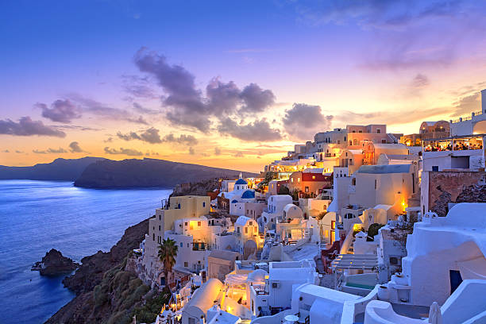

Countries I would like to visit in the future:
- USA
- Mexico
- Russia
üåÑ Yemen
Yemen is known for its ancient cities like Sana'a and Shibam, with unique architecture and a rich historical heritage.
Yemen is a hidden gem located in the southern part of the Arabian Peninsula, surrounded by the Red Sea, the Gulf of Aden, and the Arabian Sea. With over 2,000 kilometers of pristine coastline, Yemen offers stunning beaches, untouched diving spots, and breathtaking views of the sea — making it an ideal destination for eco-tourism and coastal adventures. Its historical capital, Sana'a, is one of the oldest continuously inhabited cities in the world, known for its iconic tower houses built with unique Yemeni architecture and adorned with intricate gypsum patterns. Yemen has long been a crossroads of civilizations for over 7,000 years, home to the legendary Sabaean Kingdom, whose legacy can still be explored through ancient temples and ruins such as Marib Dam and the Temple of the Moon God. The country boasts some of the most authentic cultural experiences in the region — from traditional souks filled with handmade crafts and spices, to the warm hospitality of its people. Perhaps the most striking treasure of Yemen is the island of Socotra, a UNESCO World Heritage Site known as the "Galápagos of the Indian Ocean" for its alien-like dragon blood trees, rare bird species, and untouched biodiversity. Nature lovers, photographers, and adventure seekers alike will find Socotra a paradise like no other. Whether you are drawn to its rich history, exotic nature, or vibrant culture, Yemen promises a truly unique and unforgettable travel experience, far from mainstream tourist paths — a place where ancient history meets raw natural beauty.
üåâ Turkey
Turkey bridges Europe and Asia, offering stunning mosques, historical ruins, and the vibrant city of Istanbul.
üèúÔ∏è Egypt

Egypt is famous for its ancient civilization, pyramids, and the majestic Nile River. A history lover’s dream!
üèõÔ∏è Greece
Greece is home to ancient ruins, blue-and-white seaside villages, and delicious Mediterranean cuisine.
üå∑ Holland
Holland, or the Netherlands, is famous for its tulip fields, windmills, canals, and bicycle-friendly cities.
üé° UK
The UK offers a blend of royal history, green countryside, and vibrant cities like London and Edinburgh.